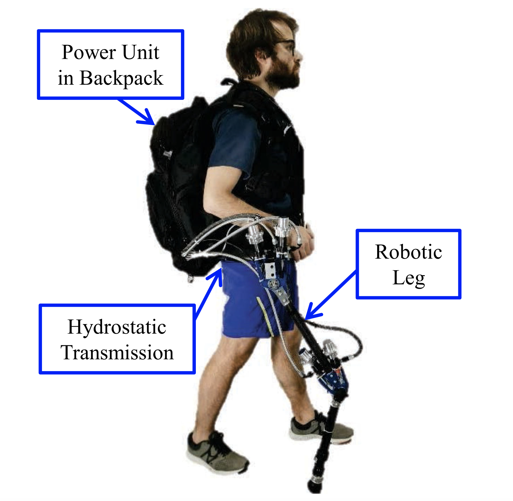

Abstract
Supetnumerary robotic legs are an alternative to using an exoskeleton, with the aim of assisting (balance and or power) the gait of a human.
Project Media


Supetnumerary robotic legs are an alternative to using an exoskeleton, with the aim of assisting (balance and or power) the gait of a human.
